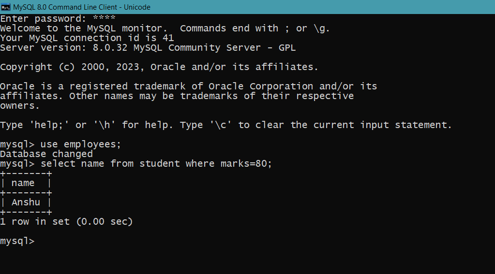

MySQL WHERE Clause
The WHERE clause is used to filter records.
It is used to extract only those records that fulfill a specified condition.
Syntax
SELECT column1, column2, ...
FROM table_name
WHERE condition;
Example
SELECT name FROM student
WHERE marks = 80;
